11｜资源估算与基准：怎样比较才公平
本章的目的不是背下每种基准的缩写，而是学会问“它测的到底是哪件事”。第一次阅读先看 §1–2、§4 和 §6：统一任务、质量、总成本，再用两个数字例子检查误导。§3、§5 解释实验室常见基准；§7–8 讨论逻辑比特和整机资源，可在读完错误校正章后回看。对同一个缩写，不同版本或实现的定义也可能不同，引用数值时以当时公开的方法说明为准。
1. 基准不是一个排行榜数字
先想一个具体但不指向某台机器的任务：估计某线路输出 0 的概率，并把估计误差控制在 ，达到预先约定的成功置信度。设备甲每秒尝试 次，却只保留 1% 的有效记录；设备乙每秒尝试 次，保留 50%。甲的原始尝试更多，但每秒可用记录是 条；乙是 条。若两边每条有效记录的统计质量和其他开销相同，乙反而更快积累可用样本。现实中两边的有效记录也未必同质量，因此这个算例只展示为什么“尝试速率”不能单独排名，不能直接宣布乙在所有任务上更好。
任何性能声明都应写成一个五元组：
少一个维度，比较就可能失真。随机采样的“正确”、化学能量的绝对误差、优化问题的近似比和纠错存储的逻辑失败率不是同一种量。设备级基准、系统级基准、应用基准与逻辑量子比特基准回答的也是不同问题。
2. 先统一资源口径
| 资源 | 含义 | 常见遗漏 |
|---|---|---|
| 物理量子比特 | 实际器件自由度 | 可用率、并行操作质量、备用和测量量子比特 |
| 编码/逻辑量子比特 | 由若干物理自由度编码的算法级单位 | 码距、边界、辅助补丁、路由和是否真的低于阈值 |
| 门数 | 全部操作数 | 门类型代价不同，物理门与逻辑门混用 |
| 深度 | 关键路径上的操作层数 | 测量、复位、搬运和经典反馈等待 |
| count / depth | 常用容错非 Clifford 资源 | 魔法态工厂的面积、接受率与吞吐 |
| shots | 电路或实验的重复运行次数；是否可视为独立须另行检验 | 置信区间、批次漂移和误差缓解引起的方差 |
| 接受率 | 后选择后留下的样本比例 | 只报告保真度，不报告丢弃多少数据 |
| 墙钟时间 | 从提交到得到结果的总时间 | 排队、编译、校准、复位、网络和后处理 |
| 空间—时间体积 | 占用量子比特数乘运行周期数 | 不同架构的周期定义和并行能力 |
| 能耗 | 规定系统边界内的能量 | 制冷、激光、控制、经典解码和数据中心 |
“1000 个量子比特”若不说明是被俘获的原子、可寻址物理比特还是经验证逻辑比特，也不说明可用率与错误率，几乎不能预测可运行问题规模。
3. 元件指标：同叫“保真度”，测量方法可能不同
| 指标或方法 | 主要回答 | 不能单独推出 |
|---|---|---|
| 空闲时的能量和相位保持 | 控制门、串扰、测量或泄漏错误 | |
| SPAM / assignment fidelity | 制备与读出判别质量 | 中间门的质量；制备和测量也未必能分离 |
| 随机基准（RB） | 特定假设下的平均 Clifford 衰减 | 最坏门、相干方向、长时间漂移、应用线路成功率 |
| 交错 RB | 候选门相对参考序列的附加衰减 | 在强门依赖/非马尔可夫噪声下的无偏门误差 |
| 同时 RB / 层基准 | 并行驱动时的串扰和整层质量 | 任意深度、任意结构线路表现 |
| 门集层析（GST） | 小门集的详细自洽模型 | 大规模系统的低成本常规检测 |
| 泄漏/丢失率 | 离开计算子空间或器件的概率 | 未标记泄漏对后续线路的全部影响 |
标准 RB 施加不同长度的随机 Clifford 序列和相应逆操作，拟合生存概率
吸收相当一部分 SPAM， 描述平均衰减。把 换算为“每门错误”要依赖维数、门集合和噪声假设。RB 的优点是可扩展且对 SPAM 较稳健；局限是平均会隐藏少数坏门、相干累积、泄漏、门依赖、相关噪声与慢漂移。因此，论文必须说明抽样方式、拟合模型、置信区间、是否同时操作及每个 Clifford 含多少原生门。
在一个明确的简化模型里，这个换算可以算出来。假设噪声稳定、与所抽 Clifford 的选择近似无关，随机化后的有效通道是 维去极化通道 。对任意纯输入 ，输出与理想输入的重合度为
这里沿用门基准测试领域的平均门保真度约定：对纯理想输出，式中的重合度是本书第 13 章所用根态保真度的平方，不是根态保真度 本身。若先算出某次输出的根态保真度，须先平方，才能放进 的平均；计算 时不能直接用 。
例如单比特 ，若拟合得到 ，该模型下每个被抽样的 Clifford 的平均不保真度为 ，而不是 。一个 Clifford 往往会分解成数个原生脉冲，不能把 直接贴到其中每个脉冲上；门依赖、泄漏或随时间漂移明显时，也不能仅凭这个简式宣称测到了目标应用的失败概率。
4. 从单门误差到长线路：一个有用但有限的估算
若粗略假定 个关键位置发生独立、同概率错误，且任一错误都导致失败，则
例如 ，无错误概率约为 。这个算例解释了“99.9% 门保真度”为什么并不自动支持很深的线路，但不能拿来预测真实算法：有些错误可被探测或纠正，有些会相消，有些相干错误会更快累积，实际位置的错误率也不相同。
若只需保守上界，可用并合界
设算法含 个关键逻辑操作，总失败预算为 ，平均每步逻辑错误需在 量级或更低。它不是完整系统模型，却显示容错资源估算为何不能直接把物理门误差当作逻辑门误差。
5. 系统级基准分别测什么
5.1 Quantum Volume
Quantum Volume（QV）在宽度等于深度的随机模型线路上，综合考察量子比特选择、连接、编译与门质量。它比单独的比特数丰富，但仍有明确边界：可挑选表现较好的子集，随机方形线路不代表结构化应用，也不直接给出墙钟吞吐或逻辑能力。应报告通过的宽度、编译策略、shots 和统计判据，而不只写 。
这个判据为何叫“重输出”，可以先拿一条只有两个量子比特的示意线路手算。假设理想输出 的概率依次为 。四个概率的中位数是 ；高于中位数的 就是这条线路的重输出，其理想总概率为 。若完全均匀地随机猜四种结果，落在这两个输出的概率只有 。正式 QV 协议要对许多按规则抽取的线路计算理想重输出集合，再以实验计数估计平均重输出概率，并按规定的统计置信度检验其是否超过 。本例的 只是方便看懂集合定义；它不是一台设备的测量结果，不能凭这一条玩具线路授予 QV 分数。判据、线路抽样和置信要求应以所引用的协议版本为准。
5.2 层保真度、镜像线路与体积式基准
层保真度/每层误差尝试衡量并行门层，比孤立两比特门更接近实际编译线路。镜像线路先执行目标结构，再执行可验证的逆，可以扩展到经典难模拟的宽度；体积式基准则在宽度—深度平面上显示通过区域。它们仍可能受线路族、编译器和可验证输出设计影响。研究表明，常见单一指标未必能很好预测结构化线路，因此最好给二维或多维性能图，而不是再创造一个“总分”。
5.3 XEB 与随机线路采样
交叉熵基准（XEB）比较实验样本与理想随机线路概率，常用于随机线路采样实验。它能诊断特定随机线路分布，却不等于通用应用性能。经典模拟基线会随张量网络、采样和硬件进步而改变，因此“量子优势”声明要同时固定线路生成规则、验证方法、经典算法版本和比较日期。
5.4 CLOPS 与吞吐
CLOPS 等指标测参数化量子线路层的执行吞吐，纳入部分参数更新和量子—经典交互。它回答“工作负载送得多快”，不是“答案有多准”。版本间若定义改变，旧值和新值也不能直接连成进步曲线。吞吐必须与输出质量、并行作业策略和后选择率共同报告。
5.5 应用导向基准
固定一组化学、优化、模拟或线性代数任务，绘制质量—时间—资源曲线，最接近用户价值。公平性至少要求：公开实例；冻结误差容限；纳入数据加载、编译、校准、采样和后处理；与强经典算法比较；避免只挑最适合某平台的实例。QED-C 应用基准套件等工作提供了可复现框架，但任何套件都只是任务样本，不是整个应用领域的最终裁判。
6. 条件保真度、后选择与吞吐必须同时出现
假设某实验只有在“所有探测器都点击且无告警”时才接受，接受率 ；被接受样本的保真度为 ；设备每秒尝试 次。可用结果速率是
而不是 次/秒。若还要通过多数投票或估计小概率量，所需原始尝试更多。光子损耗检测、离子错误检测和原子丢失擦除都可能从“可标记失败”中受益，但必须报告：
- 成功/接受事件的定义；
- 原始尝试数和接受数；
- 条件结果的置信区间；
- 被丢弃事件是否与输入或答案相关；
- 后选择能否随规模保持，或成功率是否指数下降。
只报“后选择后 99.9%”会把质量与产率拆开，无法比较系统价值。
7. 逻辑量子比特基准：不能只说“逻辑优于物理”
低于阈值时，许多拓扑码在简化噪声模型下常用近似
其中 是码距、 是物理错误率、 是与电路和解码器相关的阈值。此式只表达理想缩放直觉；相关突发错误、泄漏、边界操作、丢失和解码延迟都可能破坏它。
从总失败预算反推码距：一遍可以复算的示意账
假设资源估算把一次计算拆成 个需要保护的逻辑故障位置，并把总逻辑失败预算定为 。若暂用并合界（union bound）把每个位置的失败概率都上界为同一个 ，则必须满足
再使用上面的纯示意模型，取 、、，就有
要求它不大于 ：
取常用的奇数码距 。若再采用旋转表面码内存补丁的粗略计数 ，每个逻辑补丁约需
个物理量子比特；100 个数据逻辑比特的裸内存补丁下限就是
这条算例的价值在于展示“总预算 每位置预算 码距 空间下限”的算术链，而不是给某台机器报价。并合界通常偏保守； 的口径必须与“故障位置”的口径相同；、阈值和缩放区间必须由目标电路级噪声模型或实验确定。 还没有计入格码手术间距、路由、魔法态工厂、备用区、泄漏清除、接口和运行时间，所以不能称为整机物理比特需求。
一个可信的逻辑基准应逐项说明：
- 使用什么码、码距和物理比特布局；
- 进行了多少轮综合征提取，是逻辑存储还是逻辑门；
- 比较对象是单个最佳物理比特、同等空间—时间资源，还是未编码线路；
- 解码器是否使用未来信息、训练数据或离线重处理；
- 是否使用错误检测、后选择和丢失标记，接受率是多少；
- 码距增加时逻辑错误是否下降，是否有至少三个规模点；
- 报告的是每周期、每逻辑门还是整条线路错误；
- 解码时间是否短于实时反馈预算。
“改善 800 倍”若只在某类短线路、某个物理基线和后选择条件下成立，就不能外推成所有算法的 800 倍加速。“低于阈值”若只演示存储，也不能自动推出已经拥有通用容错门集。
解码还需要把三个维度分开报告。准确率回答综合征被解释得多好；吞吐回答每秒能处理多少轮或多少个逻辑量子比特；响应时延回答一轮数据到达后，最迟多久能把决定送回控制器。离线解码器即使平均吞吐很高，也可能依赖未来轮次、批处理或很长的尾延迟，因而不能直接用于实时纠错。相反，响应很快但吞吐低于综合征产生率的系统会不断积压。应同时给出输入规模、并行度、平均与高分位时延、是否包含数据搬运及是否在目标码距上测试。完整的反馈时延分解见第 14 章第 10 节。
7.1 S71-11：最终读错，不等于中途一次也没错
题目与口径。 一个合成逻辑存储模型每周期以概率 独立发生逻辑 ，否则为恒等；只研究这一错误类型，不含逻辑门、相位错误或泄漏。初态为 ，经过 周期后测 。求最终读到 1 的概率、过程中至少一次翻转的概率，以及并合上界。它们能否用同一个“每周期错误率”换算？
先跟踪奇偶，而不是把所有错误宣布为失败。 两次 相乘为 ，因此最终读错仅在翻转次数为奇数时发生。记该概率为 、。下一周期中，当前错误且不再翻转、当前正确但翻转，是两个互斥分支：
移到偏离 的变量，得到 。反复使用递推便有
而“至少发生过一次”的补事件是所有周期均无翻转，给出 。逐项代入：
| 所问事件或界 | 数值 | 含义 |
|---|---|---|
| 最终逻辑比特翻转 | 0.433690 | 偶数次错误已抵消 |
| 中途至少一次翻转 | 0.633968 | 只要曾发生就计入 |
| 至少一次的并合上界 | 1 | 保守而在此很松 |
对 ，前两项的一阶展开都约为 ；本题 ，已不能用该近似。对 ， 随周期增加趋近 ，并非趋近 1。若论文采用这一独立翻转拟合模型，可从最终错误概率反解
但输入与读出误差会改变偏置和对比度，相关、相干逻辑错误会改变递推，不能从任意终态错误直方图直接使用这个反演式。表面码存储原始实验采用与其存储测量定义相绑定的每周期逻辑指标（在线 2024-12-09，访问 2026-10-13）；本题只是解释口径的独立模型，没有从论文数值拟合本题的 。
运行 round71_checks.py 的 --case 11，直接相加二项分布的奇数项，核对递推闭式解及反演；包括零周期、零错误和 边界。扩展答案。 如果业务规定第一次逻辑错误出现即终止，适用事件是 ；如果错误能在后续特定操作中抵消，必须按完整任务信道计算。这也解释了资源预算中的“故障位置”与逻辑实验拟合量为何必须统一。
8. 端到端资源估算


若关键路径有 个逻辑周期，每周期时长 ， 只是理想下限。还要加魔法态等待、测量和反馈、周期校准、故障停机、失败重试、数据传输与经典前后处理。增加并行工厂可缩短时间，却会占用更多物理量子比特，形成空间—时间折中。
资源估算不应只给一个精确到个位的数字。至少要改变物理错误率、纠错周期、目标精度、解码器、工厂数量和可用率，给出敏感性范围；输入假设跨平台时，还要说明哪些是假设而非已实测能力。
练习与实验：T count 相同，魔法态等待仍不同
题目。 三个有顺序依赖的逻辑层分别同时消耗 个魔法态，每层执行时间为一个逻辑周期。工厂从时刻 0 启动，每三个周期产一批，每台每批一个合格态，首批在时刻 3 产生；没有预库存。先假设库存容量无限、存储无噪声、产出必定合格、工厂与逻辑门可并行。分别用一台、两台工厂安排最早开始时间。只按 count 除产率能否算出准确结束时间？
逐步答案。 令 为前 层累计消耗， 为工厂数， 为上一层结束时间。时刻 已产出 个态，所以第 层最早开始、结束时间满足
先把每层需求相加，得到 。再同时检查“前一层已经结束”和“足够的态已经生产”两个条件：
| 工厂数 | 第一层开始—结束 | 第二层开始—结束 | 第三层开始—结束 | 总结束时间 |
|---|---|---|---|---|
| 1 | — | — | — | 16 周期 |
| 2 | — | — | — | 10 周期 |
两台工厂在时刻 3 产两个态，第一层用掉一个，余下一个库存；时刻 6 再来两个，才凑齐第二层需要的三个。不能说“平均每 1.5 周期一个态，五个只需 7.5 周期”就结束计算，因为本例产出按批到达，门还有依赖和执行时间。
运行 factory_schedule.py 验证此表与每次消费前的库存约束。扩展练习把需求改为 ，两台工厂仍需 10 周期，但首层必须等到时刻 6；相同总时间也可能对应不同的等待位置和数据存储负担。
这个离散时序模型只揭示供应、库存、需求的关系。完整估算还要加入蒸馏拒收、库存寿命、缓冲区面积、传输与注入门错误。可用 Qualtran 表达算法分解和容错资源计数，再将非 Clifford 需求接到架构调度；该库的资源分析输出不是硬件实测时间，也不是商业优势证据。项目版本、分解策略和成本模型必须随结果保存。
8.1 可靠性不是一次校准后的峰值
面向实验或服务的资源表还应加入长期运行指标：设备可用率、校准占空比、作业完成率、失效间隔、修复时间、可用量子比特良率，以及质量随小时或天漂移的分布。这些指标不应被一个“最佳日”的门保真度代替。例如，校准后两小时内表现很好、但每天需要数小时重标定的设备，其稳定吞吐与峰值吞吐不同。论文若尚无长期运维数据，应明确写“未测量”，不要用短实验自动外推。
8.2 能量比较先画清系统边界
能耗不是量子芯片上的控制脉冲能量。可以用下式做统一记账：
这里各功率项分别代表制冷、激光/光学、控制电子学、经典计算与其余设施； 是完成一次尝试的墙钟时间， 是在固定成功判据下单次尝试被接受的概率。该简式适用于成功概率和平均尝试成本近似稳定的重试模型；若各次尝试成本不同、失败相关或存在批处理，应直接报告总实测能量除以最终接受答案数，并给出分布而不只给均值。该式只是审计框架，不是物理定律。实际报告必须说明系统边界、空闲功率是否摊销、共享设施如何分配、经典基线是否使用相同边界，以及答案精度是否相同。
例如，若在明确边界内平均功率为 ，一次尝试需 ，独立尝试成功率为 ，则平均每个成功答案的能量为
这个数只能在给定边界和成功定义下使用，不能与只计算处理器芯片功耗的经典数字直接比较。
长期服务还应把 MTBF、MTTR、计划校准、降级运行、空闲功率与作业边际功率拆开；相应定义和有效吞吐算例见第 19 章第 12 节。
9. 量子优势声明怎样公平比较
- 冻结任务、输入分布、规模、输出质量和失败概率。
- 使用公开或可审计数据，预先约定验证方法。
- 采用当前强经典算法，允许同等级别的硬件和工程优化。
- 对两边使用相同系统边界：量子端不能漏掉编译、校准、采样、纠错和后处理。
- 报告多个规模点、墙钟时间、能耗边界与置信区间。
- 区分“从某种量子分布采样”和“解决一个有外部价值的问题”。
- 接受后续经典算法改进会重新评估经验性优势结论。
量子复杂度优势是在明确理论模型下证明渐近关系；实验量子优势则相对于某时刻已知最佳经典实现。两者不能混写，“经典模拟需要多少年”也应标明硬件、算法版本和估算日期。
10. 统计与复现
对二项结果频率 ，应给二项分布的置信区间，而不只报百分比。存在漂移或批次相关性时，应按时间块分析或采用适当的层次模型，不能假定所有 shots 独立同分布。多参数搜索若只发表最好一次运行，会产生选择偏差。
复现实验至少保存：线路生成和编译代码、随机种子、原始计数、后选择规则、校准快照、软件与固件版本、后端标识、运行日期和统计脚本。厂商定义的指标若有版本更新，应保存当时的正式定义。随机种子只能固定抽样或编译选择，不能冻结设备漂移；因此还要保留实际执行时间、目标机/ISA 快照、编译产物与作业标识。可直接复用的最小 可复现实验清单（manifest） 字段表见第 14 章第 13 节，这里不再重复。
10.1 练习与实验：一万次测量不一定有一万份独立信息
题目。 收集 100 批数据，每批 100 次。每批开始时，成功概率独立、等概率地变成 或 ，整批保持这个值；给定这个值后，批内测量独立。该设定是合成漂移模型，不是设备实测。总体平均成功率为 。如果仍用独立二项分布，标准误会低估多少？
逐步答案。 令 是第 批第 次结果，批参数为 。虽然每个结果的方差都是 ，同批两次结果共享 ，所以
相关系数因此为 。不同批之间协方差为零。一批 次结果的和有 个方差项和 个有序交叉项。对 批的总体频率 ，除以 ，得到
代入 ，方差放大因子为 。独立模型给标准误 ，正确模型给 。若只为比较均值方差，等效独立样本数为 ；原始记录仍有一万条，并没有真的删掉 7984 条。
扩展题及答案。 总 shots 固定为 10000，若能使批参数每 10 次独立重置，则 ，放大因子降为 。但现实漂移由物理时间决定，单纯给同一串数据重新贴“批次”标签不会消除相关；改变采样节奏、交错实验设置或独立重标定的开销也须计入。
运行 correlated_shots.py 会直接枚举两种二项分布的混合，交叉验证上述方差，并检查 与 边界。式子只适用于此处的等长批次、共同批内相关与独立批次模型；真实数据应保存时间戳并检查批间相关，不能把此处 当成所有机器的修正系数。Ball 等对 RB 相关噪声的原始分析说明时间相关会改变基准结果分布（2015 年，访问 2026-09-26）；本题的合成批模型是独立教学推导，没有代替其量子噪声模型。
11. 一页式审稿清单
| 要问的问题 | 红旗信号 |
|---|---|
| 任务和成功标准是否预先定义？ | 运行后才挑一个有利指标 |
| 数字来自独立门还是并行门层？ | 用“最佳单门”代表全芯片 |
| 是否报告分布、误差条和日期？ | 只有最多小数位，没有不确定度 |
| 是否有损耗、后选择或缓解？ | 只报条件保真度，不报接受率/采样开销 |
| 逻辑改进的基线是否公平？ | 与一个刻意较差的物理比特比较 |
| 经典基线是否足够强？ | 用过时算法或不同硬件边界 |
| 指标能否预测目标应用？ | 由 QV、XEB 或单门保真度直接推出商业价值 |
| 结果能否复现？ | 缺原始数据、编译设置、版本和校准时间 |
| 解码结果能否及时用于反馈？ | 只报离线准确率或平均吞吐，不报响应时延与尾延迟 |
| 能耗是否同边界比较？ | 量子端只算芯片，经典端却算整机，或反之 |
12. 自检
- 为什么 RB 的平均错误不能直接预测长结构化线路？
- 、 的独立错误算例说明了什么，又没有说明什么？
- 条件保真度为 99%、接受率为 1% 时，为什么不能省略接受率？
- 证明逻辑存储低于阈值后，还缺哪些证据才能称为通用容错计算？
- QV、XEB、CLOPS 和应用基准各自主要回答什么？
- 为什么解码器的吞吐、响应时延和准确率不能互相替代？
- 比较量子与经典能耗时，至少要冻结哪些系统边界与成功条件？
- 同一任务下，甲每秒尝试 次、接受率 1%；乙每秒尝试 次、接受率 50%。每秒各有多少可用记录？若接受事件偏向某些输出，仅有这个速率比较为什么仍不够？
- 在第 3 节的单比特去极化模型中取 。分别算平均门保真度 、不保真度 ，以及对任意纯输入的根态保真度 ；为什么 不能写成 ？
答案见练习与答案：第 11 章。
参考资料
- E. Magesan, J. M. Gambetta, J. Emerson, Scalable and robust randomized benchmarking, Physical Review Letters 106, 180504 (2011)。
- A. W. Cross et al., Validating quantum computers using randomized model circuits, Physical Review A 100, 032328 (2019)。
- T. Proctor et al., Measuring the capabilities of quantum computers, Nature Physics 18, 75–79 (2022)。
- T. Lubinski et al., Quantum Algorithm Exploration using Application-Oriented Performance Benchmarks, QED-C benchmark suite update (2024)。
- IBM Quantum, A new way to measure quantum progress: layer fidelity（指标说明；属厂商资料，需与独立实验和定义版本一起使用）。
- R. Acharya et al., Quantum error correction below the surface code threshold, Nature 638, 920–926 (2025)。
- A. G. Fowler et al., Surface codes: Towards practical large-scale quantum computation, Physical Review A 86, 032324 (2012)（表面码布局、逻辑操作与容错开销的基础来源）。
- A. Paetznick et al., Improved quantum processor logical error rates via correction and detection, Nature 654, 349–355 (2026)。
- R. Takagi et al., Fundamental limits of quantum error mitigation, npj Quantum Information 8, 114 (2022)。
- A. Auffèves, Quantum Technologies Need a Quantum Energy Initiative, PRX Quantum 3, 020101 (2022)（能量指标与跨层记账的研究议程）。
- M. Fellous-Asiani et al., Optimizing resource efficiencies for scalable full-stack quantum computers, PRX Quantum 4, 040319 (2023)。